Provide the source code used for this section of the project here.
If you’re using a package for code organization, you can import it at this point. However, make sure that the actual workflow steps—including data processing, analysis, and other key tasks—are conducted and clearly demonstrated on this page. The goal is to show the technical flow of your project, highlighting how the code is executed to achieve your results.
If relevant, link to additional documentation or external references that explain any complex components. This section should give readers a clear view of how the project is implemented from a technical perspective.
Remember, this page is a technical narrative, NOT just a notebook with a collection of code cells, include in-line Prose, to describe what is going on.
# Import necessary Librariesimport pandas as pd import numpy as np import seaborn as sns# Load cleaned exoneration datasetdf = pd.read_csv('../../data/processed-data/illinois_exoneration_data.csv')pd.set_option('display.max_columns', None) # Enables display of every columndf.head()
import folium# Create a Folium map centered on Illinoisillinois_map = folium.Map(location=[40.0, -89.0], zoom_start=6) # Centered on Illinois with appropriate zoom# Add markers for each exoneration in the datasetfor _, row in df.iterrows():if pd.notnull(row['latitude']) and pd.notnull(row['longitude']): folium.Marker( location=[row['latitude'], row['longitude']], popup=(f"<b>County:</b> {row['county']}<br>"f"<b>Worst Crime:</b> {row['worst_crime_display']}<br>"f"<b>Sentence:</b> {row['sentence_in_years']} years" ), icon=folium.Icon(color='blue', icon='info-sign') ).add_to(illinois_map)
import geopandas as gpdimport fionaimport matplotlib.pyplot as pltfrom shapely.geometry import Point# Create geometry column for points based on latitude and longitudegeometry = [Point(xy) for xy inzip(df['longitude'], df['latitude'])]geo_df = gpd.GeoDataFrame(df, geometry=geometry)# Load Illinois county shapefile illinois_counties = gpd.read_file('../../data/geospatial/IL_BNDY_COUNTY_Py.shp')# Plot the Illinois map and overlay exoneration casesfig, ax = plt.subplots(figsize=(10, 10))illinois_counties.boundary.plot(ax=ax, color='black', linewidth=0.5) # Plot county boundariesgeo_df.plot(ax=ax, markersize=20, color='red', label='Exoneration Cases', alpha=0.6)# Customize the mapplt.title("Exoneration Cases in Illinois", fontsize=16)plt.legend()plt.xlabel("Longitude")plt.ylabel("Latitude")plt.grid(color='gray', linestyle='--', linewidth=0.5, alpha=0.5)plt.show()
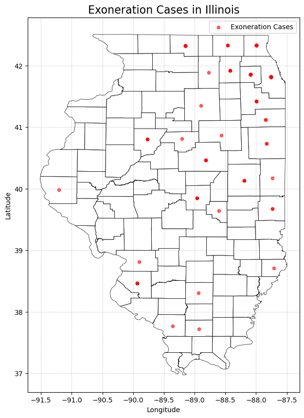
# Aggregate exoneration counts by countyexoneration_counts = df.groupby('county').size().reset_index(name='num_exonerations')# Print the aggregated exoneration countsprint("Exoneration counts by county:")print(exoneration_counts)
Exoneration counts by county:
county num_exonerations
0 Adams 1
1 Champaign 3
2 Cook 474
3 Dekalb 1
4 Dupage 10
5 Edgar 2
6 Iroquois 2
7 Jackson 1
8 Jefferson 1
9 Kane 4
10 Kankakee 2
11 Lake 10
12 Lasalle 1
13 Lawrence 1
14 Livingston 1
15 Macon 3
16 Madison 1
17 Mchenry 3
18 Mclean 4
19 Moultrie 1
20 Peoria 3
21 St. Clair 5
22 Vermilion 1
23 Will 4
24 Williamson 1
25 Winnebago 7
26 Woodford 1
import geopandas as gpdimport matplotlib.pyplot as pltfrom shapely.geometry import Point# Load the shapefile and prepare itillinois_counties = gpd.read_file('../../data/geospatial/IL_BNDY_COUNTY_Py.shp')illinois_counties['county'] = illinois_counties['COUNTY_NAM'].str.title() # Match casing# Merge exoneration data with shapefilemerged_counties = illinois_counties.merge(exoneration_counts, on='county', how='left')# Replace NaN values with 0 for counties without exonerationsmerged_counties['num_exonerations'] = merged_counties['num_exonerations'].fillna(0)# Filter out Cook County (outlier)filtered_counties = merged_counties[merged_counties['county'] !='Cook']# Create side-by-side plotsfig, axes = plt.subplots(1, 2, figsize=(20, 10), constrained_layout=True)# Plot the gradient map with all countiesmerged_counties.plot( column='num_exonerations', cmap='Reds', linewidth=0.5, edgecolor='black', ax=axes[0], legend=True)axes[0].set_title("Number of Exonerations by County in Illinois", fontsize=14)axes[0].set_xlabel("Longitude")axes[0].set_ylabel("Latitude")axes[0].grid(color='gray', linestyle='--', linewidth=0.5, alpha=0.5)# Plot the gradient map excluding Cook Countyfiltered_counties.plot( column='num_exonerations', cmap='Reds', linewidth=0.5, edgecolor='black', ax=axes[1], legend=True)axes[1].set_title("Number of Exonerations by County (Excluding Cook)", fontsize=14)axes[1].set_xlabel("Longitude")axes[1].set_ylabel("Latitude")axes[1].grid(color='gray', linestyle='--', linewidth=0.5, alpha=0.5)plt.show()
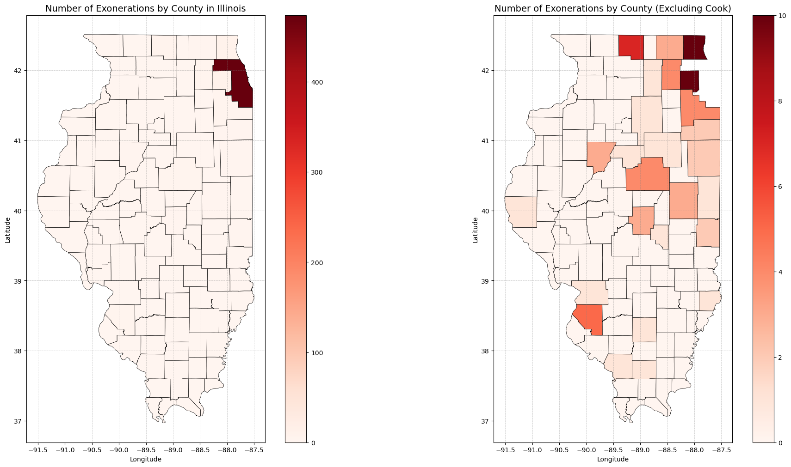
aggregated_data = pd.read_csv('../../data/processed-data/aggregated_arrests_2001_to_2021.csv')aggregated_data_melted = aggregated_data.melt(id_vars='race', var_name='county', value_name='total_arrests')# Aggregate total arrests by county for all racestotal_arrests_by_county = aggregated_data_melted.groupby('county')['total_arrests'].sum().reset_index()# Ensure county names are consistenttotal_arrests_by_county['county'] = total_arrests_by_county['county'].str.strip().str.title()illinois_counties['county'] = illinois_counties['county'].str.strip().str.title()# Merge total arrests data with the shapefilemerged_total_arrests = illinois_counties.merge( total_arrests_by_county, on='county', how='left')# Fill NaN values with 0 for counties without datamerged_total_arrests['total_arrests'] = merged_total_arrests['total_arrests'].fillna(0)# Filter out Cook Countyfiltered_total_arrests = merged_total_arrests[merged_total_arrests['county'] !='Cook']# Create side-by-side plotsfig, axes = plt.subplots(1, 2, figsize=(20, 10), constrained_layout=True)# Plot the gradient map for total arrests by county (including all counties)merged_total_arrests.plot( column='total_arrests', cmap='Blues', # linewidth=0.5, edgecolor='black', ax=axes[0], legend=True)axes[0].set_title("Total Arrests by County in Illinois", fontsize=14)axes[0].set_xlabel("Longitude")axes[0].set_ylabel("Latitude")axes[0].grid(color='gray', linestyle='--', linewidth=0.5, alpha=0.5)# Plot the gradient map excluding Cook Countyfiltered_total_arrests.plot( column='total_arrests', cmap='Blues', linewidth=0.5, edgecolor='black', ax=axes[1], legend=True)axes[1].set_title("Total Arrests by County (Excluding Cook) in Illinois", fontsize=14)axes[1].set_xlabel("Longitude")axes[1].set_ylabel("Latitude")axes[1].grid(color='gray', linestyle='--', linewidth=0.5, alpha=0.5)# Show the side-by-side mapsplt.show()
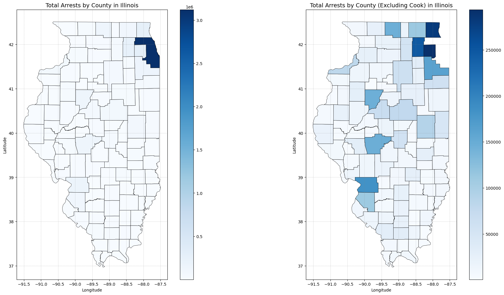
# Define the races to plotraces_to_plot = ["Black", "White", "Hispanic", "Asian"]# Filter out Cook Countymerged_data_excluding_cook = merged_data[merged_data['county'] !='Cook']# Create subplotsfig, axes = plt.subplots(2, len(races_to_plot), figsize=(20, 20), constrained_layout=True)# Plot each race's data (including Cook County) on the first rowfor i, race inenumerate(races_to_plot): race_data = merged_data[merged_data['race'] == race]# Ensure data is not emptyif race_data.empty:print(f"No data available for the selected race: {race}")continue# Plot the gradient map for the current race race_data.plot( column='total_arrests', cmap='Reds', linewidth=0.5, edgecolor='black', ax=axes[0, i], legend=(i ==len(races_to_plot) -1) # Show legend only on the last subplot ) axes[0, i].set_title(f"Total Arrests (Including Cook): {race}") axes[0, i].set_xlabel("Longitude") axes[0, i].set_ylabel("Latitude") axes[0, i].grid(color='gray', linestyle='--', linewidth=0.5, alpha=0.5)# Plot each race's data (excluding Cook County) on the second rowfor i, race inenumerate(races_to_plot): race_data = merged_data_excluding_cook[merged_data_excluding_cook['race'] == race]# Ensure data is not emptyif race_data.empty:print(f"No data available for the selected race: {race}")continue# Plot the gradient map for the current race race_data.plot( column='total_arrests', cmap='Reds', linewidth=0.5, edgecolor='black', ax=axes[1, i], legend=(i ==len(races_to_plot) -1) # Show legend only on the last subplot ) axes[1, i].set_title(f"Total Arrests (Excluding Cook): {race}") axes[1, i].set_xlabel("Longitude") axes[1, i].set_ylabel("Latitude") axes[1, i].grid(color='gray', linestyle='--', linewidth=0.5, alpha=0.5)# Show the plotplt.show()
# Merge shapefile with exoneration and arrest datasetsmerged_exonerations = illinois_counties.merge(exoneration_counts, on='county', how='left')merged_exonerations['num_exonerations'] = merged_exonerations['num_exonerations'].fillna(0)merged_arrests = illinois_counties.merge(total_arrests_by_county, on='county', how='left')merged_arrests['total_arrests'] = merged_arrests['total_arrests'].fillna(0)# Filter to exclude Cook County for both datasetsfiltered_exonerations = merged_exonerations[merged_exonerations['county'] !='Cook']filtered_arrests = merged_arrests[merged_arrests['county'] !='Cook']# Create side-by-side plots (Excluding Cook Only)fig, axes = plt.subplots(1, 2, figsize=(20, 10), constrained_layout=True)# 1. Exonerations (Excluding Cook)filtered_exonerations.plot( column='num_exonerations', cmap='Reds', linewidth=0.5, edgecolor='black', ax=axes[0], legend=True)axes[0].set_title("Exonerations by County (Excluding Cook)")axes[0].set_xlabel("Longitude")axes[0].set_ylabel("Latitude")axes[0].grid(color='gray', linestyle='--', linewidth=0.5, alpha=0.5)# 2. Arrests (Excluding Cook)filtered_arrests.plot( column='total_arrests', cmap='Blues', linewidth=0.5, edgecolor='black', ax=axes[1], legend=True)axes[1].set_title("Arrests by County (Excluding Cook)")axes[1].set_xlabel("Longitude")axes[1].set_ylabel("Latitude")axes[1].grid(color='gray', linestyle='--', linewidth=0.5, alpha=0.5)# Show the combined plotsplt.show()
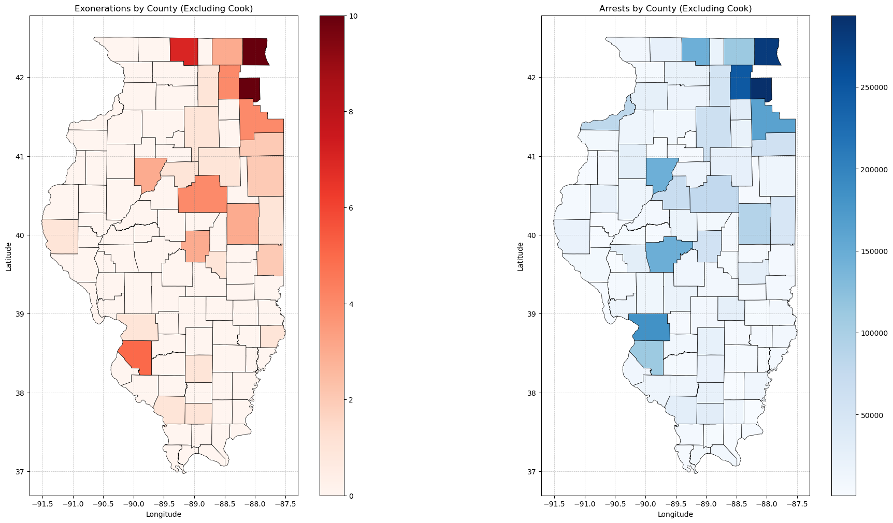
# Filter arrests data for Black individuals onlyblack_arrests = aggregated_data_melted[aggregated_data_melted['race'] =='Black']# Merge shapefile with arrests data (Black only)merged_black_arrests = illinois_counties.merge(black_arrests, on='county', how='left')merged_black_arrests['total_arrests'] = merged_black_arrests['total_arrests'].fillna(0)# Filter to exclude Cook Countyfiltered_exonerations = merged_exonerations[merged_exonerations['county'] !='Cook']filtered_black_arrests = merged_black_arrests[merged_black_arrests['county'] !='Cook']# Create side-by-side plotsfig, axes = plt.subplots(1, 2, figsize=(20, 10), constrained_layout=True)# 1. Exonerations (Excluding Cook)filtered_exonerations.plot( column='num_exonerations', cmap='Reds', linewidth=0.5, edgecolor='black', ax=axes[0], legend=True)axes[0].set_title("Exonerations by County (Excluding Cook)", fontsize=14)axes[0].set_xlabel("Longitude")axes[0].set_ylabel("Latitude")axes[0].grid(color='gray', linestyle='--', linewidth=0.5, alpha=0.5)# 2. Arrests for Black Individuals (Excluding Cook)filtered_black_arrests.plot( column='total_arrests', cmap='Blues', linewidth=0.5, edgecolor='black', ax=axes[1], legend=True)axes[1].set_title("Arrests for Black Individuals by County (Excluding Cook)", fontsize=14)axes[1].set_xlabel("Longitude")axes[1].set_ylabel("Latitude")axes[1].grid(color='gray', linestyle='--', linewidth=0.5, alpha=0.5)# Show the combined plotsplt.show()
Summary statistics:
last_name first_name age race sex state county \
count 548 548 547.000000 548 548 548 548
unique 380 332 NaN 5 2 1 27
top Johnson Anthony NaN Black male Illinois Cook
freq 12 14 NaN 418 518 548 474
mean NaN NaN 25.555759 NaN NaN NaN NaN
std NaN NaN 8.557824 NaN NaN NaN NaN
min NaN NaN 13.000000 NaN NaN NaN NaN
25% NaN NaN 19.000000 NaN NaN NaN NaN
50% NaN NaN 23.000000 NaN NaN NaN NaN
75% NaN NaN 30.000000 NaN NaN NaN NaN
max NaN NaN 57.000000 NaN NaN NaN NaN
latitude longitude worst_crime_display sentence \
count 548.000000 548.000000 548 548
unique NaN NaN 20 86
top NaN NaN Murder Probation
freq NaN NaN 242 65
mean 41.709350 -87.870354 NaN NaN
std 0.567452 0.393484 NaN NaN
min 37.723129 -91.211006 NaN NaN
25% 41.819738 -87.756525 NaN NaN
50% 41.819738 -87.756525 NaN NaN
75% 41.819738 -87.756525 NaN NaN
max 42.332738 -87.714336 NaN NaN
sentence_in_years posting_date om date_of_exoneration \
count 537.000000 548 548.000000 548
unique NaN 259 NaN 303
top NaN 2011-08-29 NaN 2022-04-22
freq NaN 87 NaN 41
mean 35.054469 NaN 0.872263 NaN
std 37.388023 NaN 0.334102 NaN
min 0.000000 NaN 0.000000 NaN
25% 2.166667 NaN 1.000000 NaN
50% 20.000000 NaN 1.000000 NaN
75% 60.000000 NaN 1.000000 NaN
max 100.000000 NaN 1.000000 NaN
date_of_1st_conviction date_of_release arson bitemark \
count 548 548 548.000000 548.000000
unique 497 490 NaN NaN
top 1982-09-22 2003-01-10 NaN NaN
freq 4 4 NaN NaN
mean NaN NaN 0.021898 0.005474
std NaN NaN 0.146484 0.073854
min NaN NaN 0.000000 0.000000
25% NaN NaN 0.000000 0.000000
50% NaN NaN 0.000000 0.000000
75% NaN NaN 0.000000 0.000000
max NaN NaN 1.000000 1.000000
co_defendant_confessed conviction_integrity_unit \
count 548.000000 548.000000
unique NaN NaN
top NaN NaN
freq NaN NaN
mean 0.217153 0.439781
std 0.412685 0.496814
min 0.000000 0.000000
25% 0.000000 0.000000
50% 0.000000 0.000000
75% 0.000000 1.000000
max 1.000000 1.000000
child_sex_abuse_hysteria_case child_victim female_exoneree \
count 548.0 548.000000 548.000000
unique NaN NaN NaN
top NaN NaN NaN
freq NaN NaN NaN
mean 0.0 0.131387 0.054745
std 0.0 0.338132 0.227689
min 0.0 0.000000 0.000000
25% 0.0 0.000000 0.000000
50% 0.0 0.000000 0.000000
75% 0.0 0.000000 0.000000
max 0.0 1.000000 1.000000
federal_case homicide innocence_organization jailhouse_informant \
count 548.0 548.000000 548.000000 548.000000
unique NaN NaN NaN NaN
top NaN NaN NaN NaN
freq NaN NaN NaN NaN
mean 0.0 0.445255 0.583942 0.043796
std 0.0 0.497448 0.493354 0.204827
min 0.0 0.000000 0.000000 0.000000
25% 0.0 0.000000 0.000000 0.000000
50% 0.0 0.000000 1.000000 0.000000
75% 0.0 1.000000 1.000000 0.000000
max 0.0 1.000000 1.000000 1.000000
juvenile_defendant misdemeanor no_crime_case guilty_plea_case \
count 548.000000 548.000000 548.000000 548.000000
unique NaN NaN NaN NaN
top NaN NaN NaN NaN
freq NaN NaN NaN NaN
mean 0.142336 0.007299 0.496350 0.410584
std 0.349713 0.085201 0.500443 0.492389
min 0.000000 0.000000 0.000000 0.000000
25% 0.000000 0.000000 0.000000 0.000000
50% 0.000000 0.000000 0.000000 0.000000
75% 0.000000 0.000000 1.000000 1.000000
max 1.000000 1.000000 1.000000 1.000000
posthumous_exoneration sexual_assault shaken_baby_syndrome_case \
count 548.000000 548.000000 548.000000
unique NaN NaN NaN
top NaN NaN NaN
freq NaN NaN NaN
mean 0.001825 0.124088 0.001825
std 0.042718 0.329983 0.042718
min 0.000000 0.000000 0.000000
25% 0.000000 0.000000 0.000000
50% 0.000000 0.000000 0.000000
75% 0.000000 0.000000 0.000000
max 1.000000 1.000000 1.000000
prosecutor_misconduct police_officer_misconduct \
count 548.000000 548.000000
unique NaN NaN
top NaN NaN
freq NaN NaN
mean 0.195255 0.813869
std 0.396759 0.389568
min 0.000000 0.000000
25% 0.000000 1.000000
50% 0.000000 1.000000
75% 0.000000 1.000000
max 1.000000 1.000000
forensic_analyst_misconduct child_welfare_worker_misconduct \
count 548.000000 548.0
unique NaN NaN
top NaN NaN
freq NaN NaN
mean 0.031022 0.0
std 0.173535 0.0
min 0.000000 0.0
25% 0.000000 0.0
50% 0.000000 0.0
75% 0.000000 0.0
max 1.000000 0.0
withheld_exculpatory_evidence \
count 548.000000
unique NaN
top NaN
freq NaN
mean 0.801095
std 0.399541
min 0.000000
25% 1.000000
50% 1.000000
75% 1.000000
max 1.000000
misconduct_that_is_not_withholding_evidence \
count 548.000000
unique NaN
top NaN
freq NaN
mean 0.839416
std 0.367482
min 0.000000
25% 1.000000
50% 1.000000
75% 1.000000
max 1.000000
knowingly_permitting_perjury \
count 548.000000
unique NaN
top NaN
freq NaN
mean 0.062044
std 0.241455
min 0.000000
25% 0.000000
50% 0.000000
75% 0.000000
max 1.000000
witness_tampering_or_misconduct_interrogating_co_defendant \
count 548.000000
unique NaN
top NaN
freq NaN
mean 0.271898
std 0.445344
min 0.000000
25% 0.000000
50% 0.000000
75% 1.000000
max 1.000000
misconduct_in_interrogation_of_exoneree perjury_by_official \
count 548.000000 548.000000
unique NaN NaN
top NaN NaN
freq NaN NaN
mean 0.195255 0.299270
std 0.396759 0.458357
min 0.000000 0.000000
25% 0.000000 0.000000
50% 0.000000 0.000000
75% 0.000000 1.000000
max 1.000000 1.000000
prosecutor_lied_in_court tag_sum \
count 548.000000 548.000000
unique NaN NaN
top NaN NaN
freq NaN NaN
mean 0.040146 6.677007
std 0.196481 2.573892
min 0.000000 0.000000
25% 0.000000 6.000000
50% 0.000000 7.000000
75% 0.000000 8.000000
max 1.000000 14.000000
geocode_address
count 548
unique 27
top Cook County, Illinois, United States
freq 474
mean NaN
std NaN
min NaN
25% NaN
50% NaN
75% NaN
max NaN
# Define the specific columns to visualizecolumns_to_plot = ['age', 'race', 'county', 'sentence_in_years']# Create histograms for the numeric or categorical distributionsfor col in columns_to_plot:if col in df.columns: # Ensure the column exists plt.figure(figsize=(8, 4))# Check if the column is numeric or categoricalif pd.api.types.is_numeric_dtype(df[col]): sns.histplot(df[col], kde=True, bins=30, color='blue') plt.title(f'Distribution of {col}') plt.xlabel(col) plt.ylabel('Frequency')else: sns.countplot(y=df[col], order=df[col].value_counts().index, palette='viridis') plt.title(f'Distribution of {col}') plt.xlabel('Count') plt.ylabel(col) plt.show()else:print(f"Column '{col}' does not exist in the dataset.")
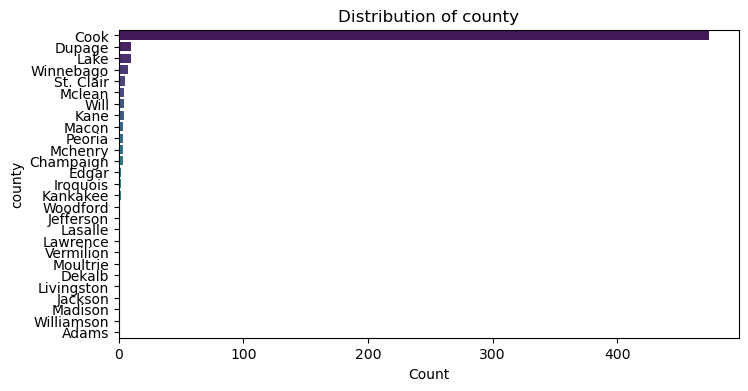
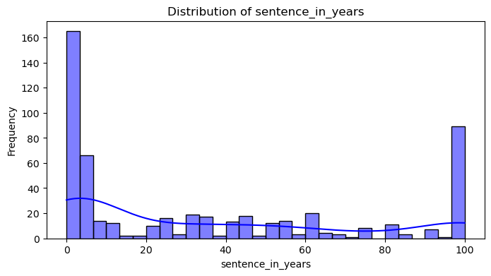
# Define the columns for countscolumns_to_count = ['worst_crime_display', 'sex']# Generate count plots for these columnsfor col in columns_to_count:if col in df.columns: # Ensure the column exists plt.figure(figsize=(8, 4)) sns.countplot(y=df[col], order=df[col].value_counts().index, palette='viridis') plt.title(f'Count of {col}') plt.xlabel('Count') plt.ylabel(col) plt.show()else:print(f"Column '{col}' does not exist in the dataset.")
# Drop rows where sentence_in_years equals 100 -> life sentence and death penaltydf_filtered = df[df['sentence_in_years'] !=100]# Plot Sentence in Years by Raceplt.figure(figsize=(12, 6))sns.boxplot(data=df_filtered, x='race', y='sentence_in_years', palette='viridis')plt.title('Sentence Length in Years by Race (Excluding Life Sentence and Death Penalty)')plt.xlabel('Race')plt.ylabel('Sentence Length (Years)')plt.xticks(rotation=45)plt.tight_layout()plt.show()
# Calculate sample size per racerace_counts = df_filtered['race'].value_counts()# Z-Score normalizationdf_filtered['normalized_sentence_length'] = ( df_filtered.groupby('race')['sentence_in_years'] .transform(lambda x: (x - x.mean()) / x.std()))# Plot the normalized sentence lengthsplt.figure(figsize=(12, 6))sns.boxplot(data=df_filtered, x='race', y='normalized_sentence_length', palette='viridis')plt.title('Normalized Sentence Length in Years by Race')plt.xlabel('Race')plt.ylabel('Normalized Sentence Length')plt.xticks(rotation=45)plt.tight_layout()plt.show()
C:\Users\court\AppData\Local\Temp\ipykernel_6756\1186036694.py:5: SettingWithCopyWarning:
A value is trying to be set on a copy of a slice from a DataFrame.
Try using .loc[row_indexer,col_indexer] = value instead
See the caveats in the documentation: https://pandas.pydata.org/pandas-docs/stable/user_guide/indexing.html#returning-a-view-versus-a-copy
df_filtered['normalized_sentence_length'] = (
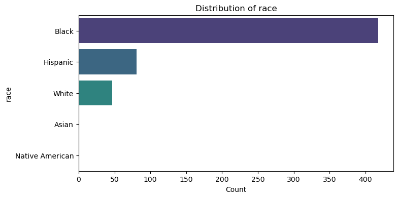
# Count the frequency of each tagtag_columns = ['arson', 'bitemark', 'co_defendant_confessed', 'conviction_integrity_unit','child_sex_abuse_hysteria_case', 'child_victim', 'female_exoneree', 'federal_case', 'homicide', 'innocence_organization', 'jailhouse_informant', 'juvenile_defendant', 'misdemeanor', 'no_crime_case', 'guilty_plea_case', 'posthumous_exoneration', 'sexual_assault', 'shaken_baby_syndrome_case','prosecutor_misconduct', 'police_officer_misconduct', 'forensic_analyst_misconduct', 'child_welfare_worker_misconduct', 'withheld_exculpatory_evidence','misconduct_that_is_not_withholding_evidence', 'knowingly_permitting_perjury', 'witness_tampering_or_misconduct_interrogating_co_defendant','misconduct_in_interrogation_of_exoneree', 'perjury_by_official', 'prosecutor_lied_in_court']# Count occurrences of each tagtag_counts = df[tag_columns].sum().sort_values(ascending=False)tag_counts.plot(kind='bar', figsize=(12, 6), color='skyblue')plt.title("Frequency of Tags in Cases")plt.ylabel("Count")plt.xlabel("Tags")plt.xticks(rotation=45, ha='right')plt.show()
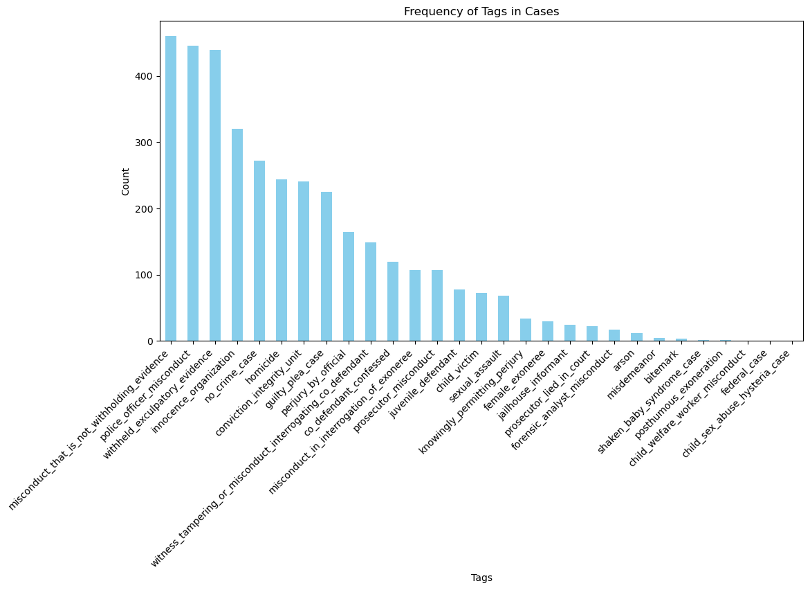
# Distribution of tag_sumplt.figure(figsize=(8, 4))sns.histplot(df['tag_sum'], kde=True, bins=20, color='orange')plt.title("Distribution of Total Tags Per Case")plt.xlabel("Total Tags (tag_sum)")plt.ylabel("Frequency")plt.show()# Tag sum by countyplt.figure(figsize=(12, 6))sns.boxplot(data=df, x='county', y='tag_sum', palette='coolwarm')plt.title("Distribution of Total Tags by County")plt.xlabel("County")plt.ylabel("Total Tags")plt.xticks(rotation=45, ha='right')plt.tight_layout()plt.show()
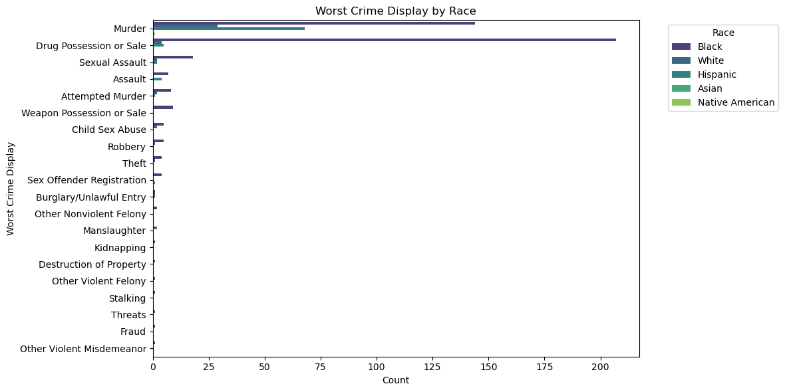
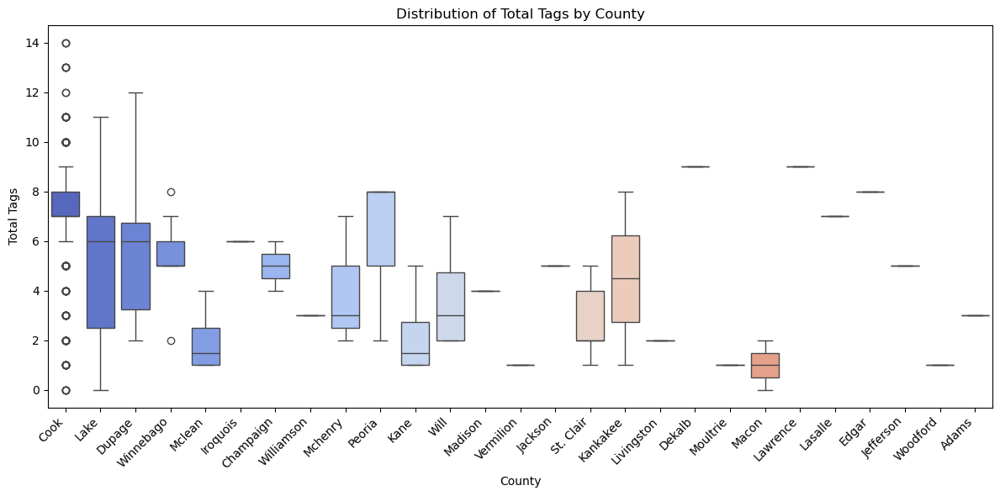
# Group misconduct-related tagsmisconduct_tags = ['prosecutor_misconduct', 'police_officer_misconduct', 'forensic_analyst_misconduct', 'child_welfare_worker_misconduct','withheld_exculpatory_evidence', 'misconduct_that_is_not_withholding_evidence','knowingly_permitting_perjury', 'witness_tampering_or_misconduct_interrogating_co_defendant','misconduct_in_interrogation_of_exoneree', 'perjury_by_official', 'prosecutor_lied_in_court']# Create a column for combined misconductdf['total_misconduct'] = df[misconduct_tags].sum(axis=1)# Aggregate total misconduct by race (using sum for total counts)race_misconduct = df.groupby('race')['total_misconduct'].sum().reset_index()# Bar plot of total misconduct by raceplt.figure(figsize=(10, 6))sns.barplot(data=race_misconduct, x='race', y='total_misconduct', palette='viridis')plt.title("Total Misconduct Tags by Race")plt.xlabel("Race")plt.ylabel("Total Number of Misconduct Tags")plt.tight_layout()plt.show()
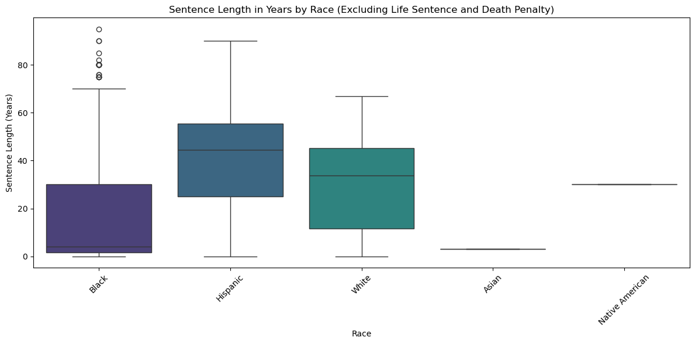
# Aggregate each misconduct tag by racemisconduct_by_race = df.groupby('race')[misconduct_tags].sum()# Heatmap of misconduct types by race with improved layoutplt.figure(figsize=(14, 10)) # Adjust figure size for better spacingsns.heatmap( misconduct_by_race, annot=True, cmap='coolwarm', fmt='d', linewidths=0.5, cbar_kws={'label': 'Counts'}, # Add a color bar label xticklabels=True, yticklabels=True)plt.title("Breakdown of Misconduct Types by Race", fontsize=16) # Larger title font sizeplt.xlabel("Misconduct Type", fontsize=12) # Larger x-axis label font sizeplt.ylabel("Race", fontsize=12) # Larger y-axis label font sizeplt.xticks(rotation=30, ha='right', fontsize=10) # Rotate x-axis labels for readabilityplt.yticks(fontsize=10) # Adjust y-axis label font sizeplt.tight_layout() # Optimize layout to avoid overlapplt.show()
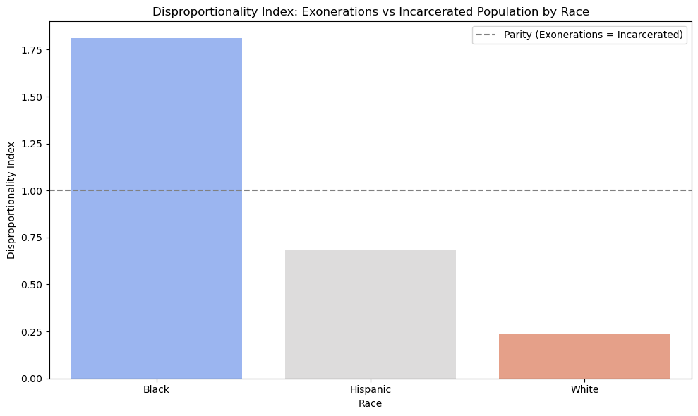
# Aggregate misconduct by county and typemisconduct_county = df.groupby('county')[misconduct_tags].sum()# Heatmap of misconduct types by countyplt.figure(figsize=(14, 10))sns.heatmap( misconduct_county, annot=True, cmap='viridis', fmt='.0f', # Format numbers as integers linewidths=0.5, cbar_kws={'label': 'Counts'})plt.title("Breakdown of Misconduct Types by County", fontsize=16)plt.xlabel("Misconduct Type", fontsize=12)plt.ylabel("County", fontsize=12)plt.xticks(rotation=30, ha='right', fontsize=10)plt.yticks(fontsize=10)plt.tight_layout()plt.show()
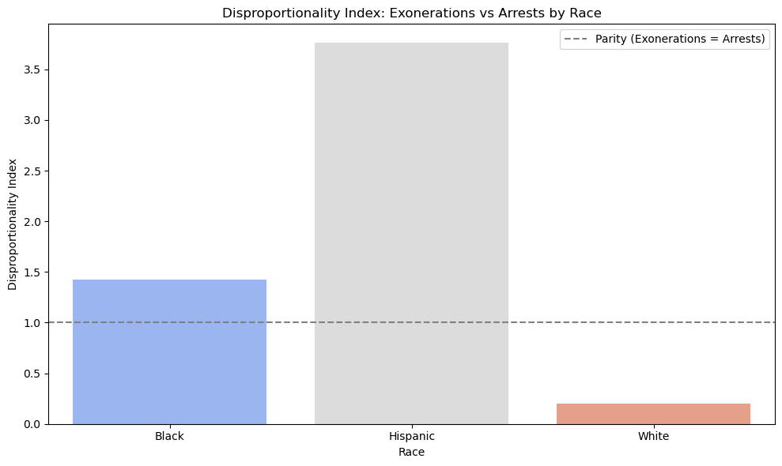
# Filter rows where OM equals 1df_misconduct = df[df['om'] ==1]# Misconduct counts by countycounty_misconduct = df_misconduct.groupby('county').size().sort_values(ascending=False)# Bar plot for misconduct by countycounty_misconduct.plot(kind='bar', figsize=(12, 6), color='coral')plt.title("Total Misconduct Cases by County (OM = 1)")plt.xlabel("County")plt.ylabel("Count of Misconduct Cases")plt.xticks(rotation=45, ha='right')plt.show()
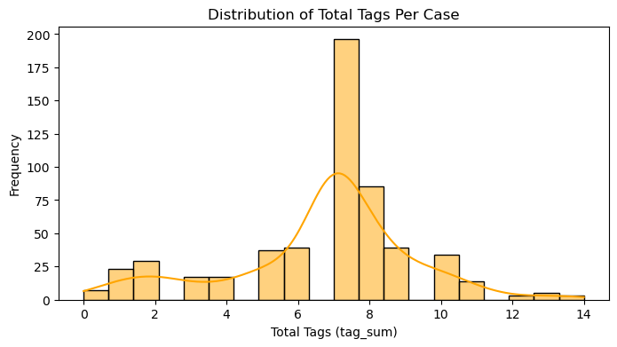
# Aggregate misconduct by county and racemisconduct_race_county = df.groupby(['county', 'race'])['total_misconduct'].sum().unstack()# Heatmap of misconduct by county and raceplt.figure(figsize=(14, 10))sns.heatmap( misconduct_race_county, annot=True, # Add cell annotations cmap='viridis', fmt='.0f', # Format annotations as integers linewidths=0.5, # Add gridlines cbar_kws={'label': 'Total Misconduct'})plt.title("Misconduct Tags by County and Race", fontsize=16)plt.xlabel("Race", fontsize=12)plt.ylabel("County", fontsize=12)plt.xticks(rotation=30, ha='right', fontsize=10)plt.yticks(fontsize=10)plt.tight_layout() # Adjust layout for readabilityplt.show()